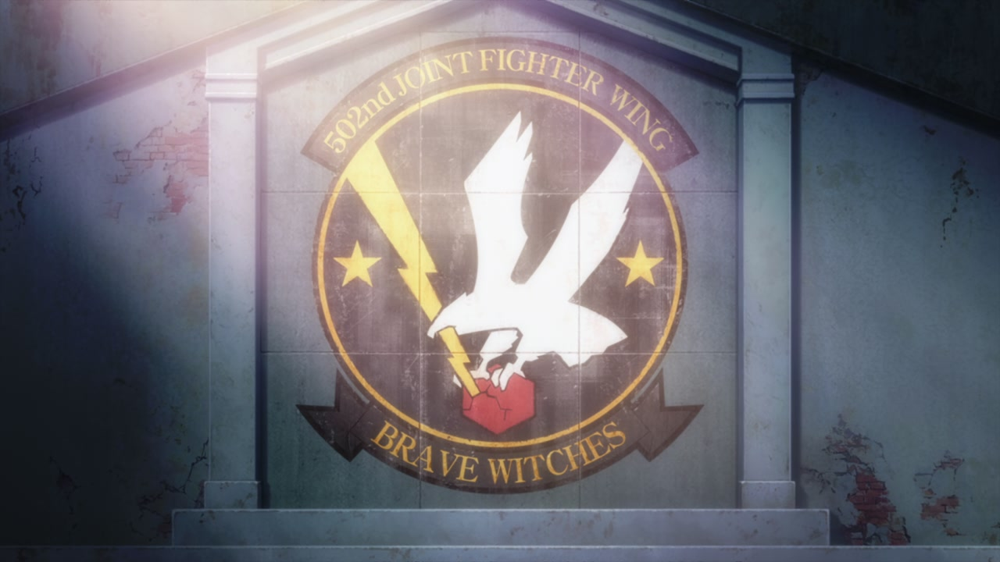

Brave Witches

- Brave Witches OP - 74 images - SFW
- (BD1) Brave Witches #01 – The Witch of Sasebo? - 122 images - NSFW
- (BD1) Brave Witches #02 – Take Flight, Chidori
- (BD2) Brave Witches #03 – The 502nd Joint Fighter Wing
- (BD2) Brave Witches #04 – If You Want to Fight, Get Stronger!
- (BD3) Brave Witches #05 – Deadly Battle in the Freezing Cold
- (BD3) Brave Witches #06 – Good Luck
- (BD4) Brave Witches #07 – On a Holy Night
- (BD4) Brave Witches #08 – Grape Juice for Your Eyes
- (BD5) Brave Witches #09 – Break Witches
- (BD5) Brave Witches #10 – Big Sister and Little Sister
- (BD6) Brave Witches #11 – We Won't Know Until We Try
- (BD6) Brave Witches #12 – Shining with Light...
Fair warning, pages are very image heavy.